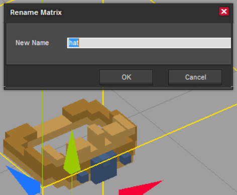
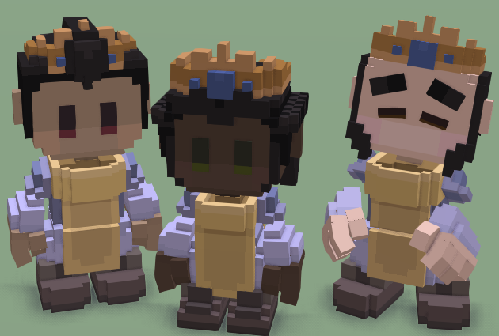

Creating armor and outfits
Let's create a new armor for the footmen. As always, let's copy a similar item from the stonehearth mod into our mod, and modify the files. For example, copy stonehearth/entities/armor/iron_mail.
Rename the files. We're going to use the startermod_items magic armor as example here, so substitute any "iron_mail" to "magic_armor" (or whatever identifier you want for your armor).
Import the model into the voxel editor of your choice and modify it. Make sure the matrices/layers are named correctly before exporting it (otherwise the armor won't stick to the hearthling's body and won't animate) and remember to take a screenshot for the icon. The armor doesn't need to have all the body parts if you don't want to, so you can remove any matrix/layer that you don't want.
Modify the JSON files. Let's start by modifying the magic_armor_iconic.json. Here we only have to update the reference to the QB model, the icon and the display_name / description.
Now for magic_armor.json. These are the different components related to the equipment piece:
-
"model_variants": { "default": { "layer": "armor", "transparent": "false", "models": [ "file(magic_armor.qb)" ] }, "female": { "layer": "armor", "transparent": "false", "models": [ "file(magic_armor_female.qb)" ] }, ... },Here we have several variants. The "default" one is for the male hearthling, the "female" one for the female. This way when females equip this armor, we can have a different QB model for them. We can also have model variants for the orcs, etc.
The "female" key comes from the female_N.json files inside
stonehearth/entities/humans/female:"render_info": { "animation_table": "stonehearth:skeletons:humanoid:female", "model_variant": "female" }Males don't have this key defined, so they will get the "default" variant.
Orcs and rabbits also have model variants, defined in some files insidestonehearth/entities/monsters/orcs/orcandstonehearth/entities/rabbit_biped. Goblins don't have them, they have their own equipment pieces which we don't use for any other entities, so they use a default variant instead.You can define your own variants for equipment pieces using that property in the render info of the corresponding entity.
"layer" : here we declare the layer of the outfit. These are the possible values:
"skeleton" / "skin" / "hat" / "clothing" / "armor" / "cloak"If no layer is specified, "skin" will be used.
These layers allow us to stack different models on top of each other, basically clothes over the body. Don't confuse it with the matrices/layers from the QB file, this "layer" just acts like a group / category.
Normally we won't use "skeleton" nor "skin". The rest of layer values, used with the transparency setting, will hide (or not) the part of the hearthling body that matches the matrix/layer names from the QB model.
"transparent" : if this property is not defined, by default it will be "true" (notice the quotes). When it's "false", it will completely replace the body part of the hearthling with this model (when we use a render type of "merge_with_model"). Useful for hats, to keep showing the hearthling's hair (e.g. for circlets), and for items like bracelets.
All the matrices/layers of the QB model will be treated with the same transparency declared here. If you need different transparencies, you'll need to make separate items.
"stonehearth:entity_forms" : {}
"stonehearth:entity_forms": { "iconic_form": "file(magic_armor_iconic.json)" },Here we only declare the iconic form, since this item should be equippable and restockable but not placeable.
"stonehearth:equipment_piece" : {}
"stonehearth:equipment_piece": { "render_type": "merge_with_model", "slot": "torso", "ilevel": 7, "roles": [ "mail_wearer" ], "required_job_level": 4, "equip_effect": "stonehearth:effects:weapon_level_up" }Here we specify the properties of this equipment piece:
"render_type" : we use "merge_with_model" because we want the armor to merge with the hearthling's body, we exported our QB model with the correct names for the layers. Since we set the transparency to "false" in the model_variants component, any part of the skin that might pop out of our armor will be hidden (as if the armor part replaced that body part).
"slot" : we use "torso", which is one of the predefined slots that the game uses. This way hearthlings can replace this armor with better ones.
"ilevel" : we use a value of 7, a bit higher than the ilevel of the iron_mail that we copied.
In the current implementation of the game, it's not possible to manually assing equipment to specific hearthlings. So if you want your item to be equipped, check the ilevel of the other items, taking into account the balancing.
"roles" : we keep the "mail_wearer" role since we want this armor to be equipped only by footmen.
"required_job_level" : we'll use 4, so only footmen at level 4 or above will equip this item.
"equip_effect" : we reused the same effect that the other equippable items from the game use.
Inside the entity data, we have the armor data:
"entity_data": { "stonehearth:combat:armor_data": { "base_damage_reduction": 8 }, ...For "stonehearth:combat:armor_data" we only have the property "base_damage_reduction", which represents the defense of this armor.
The final defense of the hearthling when in combat will vary depending on other items equipped, buffs/debuffs, etc.
We can also change the rest of properties from the "entity_data" section.
-
Add an alias to your manifest:
"aliases": { "armor:magic_armor" : "file(entities/armor/magic_armor)" }Test your new armor in the game:

Creating headgear
Most of the existing headgear can be found inside stonehearth/entities/armor.
You can have an outfit that's both the clothes and a hat, but then both of them will have to share the "transparent" setting from the model_variants component.
If you make the hat separately, then you can declare a different transparency for it.
For our example, we'll create a crown. Let's copy
stonehearth/entities/armor/bronze_helmto our mod, or any other circlet/helmet.Let's edit the models. The layer/matrix must be named "hat": 
We'll also edit the model for the iconic and take a screenshot for the icon.
Now we edit the JSON files. For the iconic we adjust the model name. For magic_crown.json, we'll edit these properties:
-
"model_variants": { "default": { "layer": "hat", "transparent": "true", "models": [ "file(magic_crown.qb)" ] }, "female": { "layer": "hat", "transparent": "true", "models": [ "file(magic_crown_female.qb)" ] } }The "layer" will be "hat", so that our model gets merged on top of the body.
We'll set the "transparent" property to "true" (notice that it is a string, not a boolean).
We're using a render type of "merge_with_model" in the equipment component, our QB model's layer is named 'hat', and the layer that contains the upper part of the hearthling's hair is also named 'hat', so this transparency will make the hair be visible after merging the models.
If our headgear covers all the head (such as a helmet or an archer hood), we can set it to "false", which will completely hide the upper part of the hearthling's hair.
And last, we change the file names to point to our models.
"stonehearth:entity_forms" : {}
"stonehearth:entity_forms": { "iconic_form": "file(magic_crown_iconic.json)" }Here we only declare the iconic form, since this item should be equippable and restockable but not placeable.
"stonehearth:equipment_piece" : {}
"stonehearth:equipment_piece": { "render_type": "merge_with_model", "slot": "helmet", "ilevel": 2, "required_job_level": 1, "roles": [ "cleric_job" ], "equip_effect": "stonehearth:effects:weapon_level_up" }Here we have the same properties than for the armor example above.
For the "render_type" we use "merge_with_model", our crown will go in the "helmet" slot. We make it only equippable by clerics (using the "cleric_job" role), we change the "ilevel" and "required_job_level", and we leave the default "equip_effect" as it is.
For the entity data, we'll edit the properties on the "stonehearth:net_worth" and "stonehearth:catalog" sections.
Our crown will also add some defense, so we include the "stonehearth:combat:armor_data" entry inside "entity_data":
"stonehearth:combat:armor_data": { "base_damage_reduction": 1 }This entry only has the "base_damage_reduction" property in it. The final defense value used in combat will also depend on other items that the hearthling has equipped, multiplier attributes from buffs, etc.
-
Add an alias to your manifest:
"aliases": { "armor:magic_crown" : "file(entities/armor/magic_crown)" }Test your new headgear in the game. You might need to tweak the model several times if it's clipping too much with certain hairstyles, or if it's too high / low for the head: 